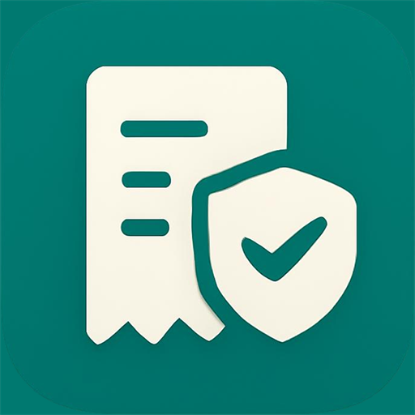
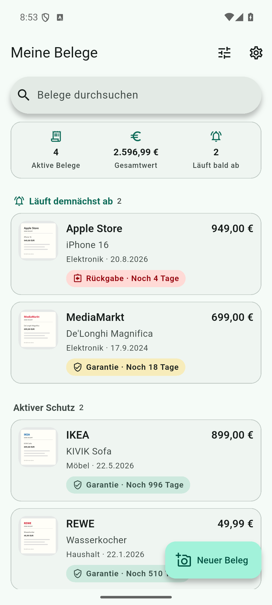
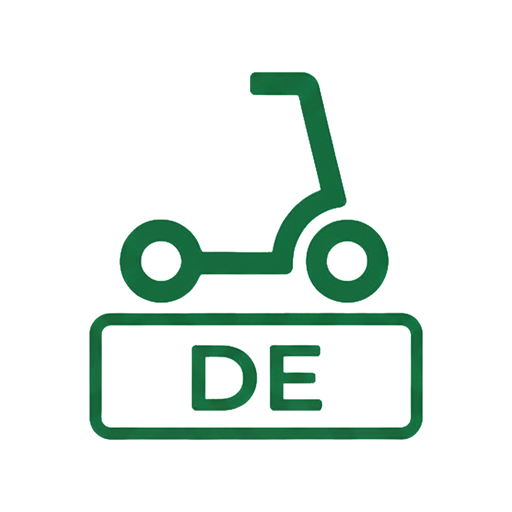

Unabhängige Apps für Android
Ein bisschen weniger
Alltagschaos.
Belege aufbewahren. Babyschlaf festhalten. Den Scooter in Schuss halten. Praktische Apps für die Dinge, die deinen Alltag ausmachen.
Apps entdecken ↓
Entwickelt von Vardholt. Für konkrete Aufgaben.

BonSafeBelege. Fristen. Erledigt.

Die Vardholt-Apps
Finde deinen Alltagshelfer.
Klare Werkzeuge für Familie, Dokumente,
Mobilität und Heimwerken.
Im Fokus · Familie
BabyLog
Stillen, Schlaf und Windeln.
In Sekunden festgehalten.
Stillprotokoll mit Timer je Brust, Schlaf, Windeln, Gesundheit und Beikost. Alles bleibt auf deinem Gerät: ohne Werbung, ohne Abo, ohne Konto.
Dokumente
BonSafe
Kaufnachweise sammeln und Garantie- sowie Rückgabefristen im Blick behalten. Lokal auf deinem Gerät, ohne verpflichtendes App-Konto.
Familie
ZahnTagebuch
Vom ersten Milchzahn bis zum Zahnwechsel: Halte die kleinen Meilensteine im Zahnschema fest.
Familie
SleepLog
Schlaf und Alltag deines Babys im 24-Stunden-Protokoll. PDF-Protokolle mit Pro zum Teilen und Mitnehmen.
Familie · Spiele
FamilyBash
Sieben Party- und Familienspiele für 3–20 Spieler auf einem Handy. Fragen passend zum Alter, auch ohne Internet.
Dokumente
PaperSnap
Belege, Verträge und Briefe als PDF scannen. Texterkennung auf dem Gerät, ohne Konto und ohne Wasserzeichen.
Mobilität
ScootKeeper
Wartung, Kilometerstand, Akku und Reifendruck deines E-Scooters an einem Ort festhalten.
ScootRules
E-Scooter-Regeln für acht Länder nachschlagen: von erlaubten Wegen bis zu den wichtigsten Verkehrsregeln.

Mobilität · DeutschlandPlakettenAlarm
Den jährlichen Wechsel des deutschen Versicherungskennzeichens im Blick behalten – mit Frist und Erinnerung.
Heimwerken
ConcreteCalc
Betonmengen und Materialbedarf für dein nächstes Projekt berechnen. Vom Fundament bis zur Bodenplatte.
Verfügbarkeit, unterstützte Sprachen, Preise und In-App-Käufe findest du im jeweiligen Google-Play-Eintrag.
Hinter den Apps
Ein Entwickler.
Viele kleine Alltagsfragen.
Ich bin Marc, der Entwickler hinter Vardholt. Ich entwickle kleine, fokussierte Apps, mit denen du den Überblick behältst, Wichtiges festhältst und deinen Materialbedarf berechnest.
Ein klarer Zweck und eine verständliche Bedienung stehen im Mittelpunkt. Viele Aufgaben funktionieren direkt auf deinem Gerät. Den genauen Funktionsumfang und die Datenschutzinformationen findest du bei jeder App.